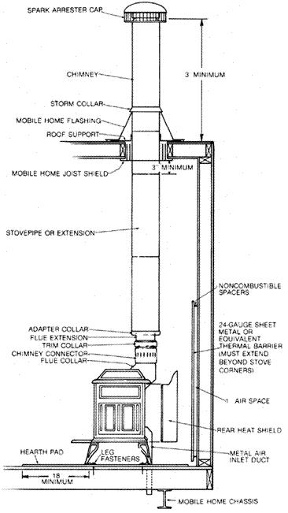

Issue # 95 - September/October 1985
The pleasures and economic advantages of wood burning are now available to those of us who don't dwell in site-built homes.
Woodstoves face some stiff competition from their more conventionally fired heatproducing brethren. After all, the energy represented by a 50-pound stoveload of wood is equivalent to that in just 2-1/2 gallons of fuel oil . . . and those logs have to be toted and hand-fed to the appliance!
Still, trees are a renewable energy source, one that-thanks to advances within the woodstove industry-is beginning to compare favorably with the accepted alternatives of gas, oil, and electricity. Wood combustion efficiencies are on the rise, solid fuel prices remain low, and woodstove aesthetics are as pleasing as ever.
Mobile home owners, however, should harbor a special respect for wood-burning heaters . . . in part because clearance distances from combustible surfaces will likely be reduced, and to some degree because the materials used in such manufactured housing are more heat-conductive than those often used in conventional structures. Less obvious is the fact that combustion-of any fuel-depletes the oxygen supply within a living space, and this can present a health hazard in itself.
Before a woodstove may be installed in a mobile home, the U.S. Department of Housing and Urban Development (HUD) requires that specific regulations be satisfied. First, the stove model must have been tested by a HUD-approved laboratory and listed for use in mobile homes. A metal tag permanently fastened to the rear of the appliance indicates the name of the testing facility and the stove's compliance with HUD Standard UM-84. Second, a tested and listed prefabricated chimney system-connected directly to the stove and installed properly-must be used. Third, a hard ducting system for bringing outside combustion air directly to the stove's air inlet is required. And finally, some means of securing the stove to the floor of the home is called for.
In addition to the HUD requirements, some basic clearance and installation guidelines, provided by the stove manufacturer and based on testing to Underwriters' Laboratory Standard 1482, should be adhered to.
As a mobile home owner, your choice of woodstoves is limited to those approved by HUD, but you won't be disappointed by the selection. Most manufacturers either make stoves specifically for use in mobile homes or have adapter kits available to bring standard models into compliance with the established regulations. In general, HUD-approved units burn wood rather than coal, have a moderate Btu output, and incorporate a top-exiting flue collar.
Since the stove models are tested individually, the manufacturer provides minimum clearance information specific to each model, based on its laboratory performance. Don't assume that a 25,000-Btu/hr stove can safely be placed closer to a wall than a 40,000-Btu/hr model, because it's not necessarily true; configuration, design, and a host of other factors can easily get in the way of common sense.
Clearance, by the way, is defined as openspace distance between the top plate of the stove or its flue connector and any combustible materials, including walls, ceilings, trim moldings, furniture, and woodstorage boxes. Recommended minimum clearances may be reduced-the manufacturer's specifications should say by how much-by utilizing suitable thermal barriers on surfaces containing any materials that will ignite and burn. (Remember, a wood-stud wall covered with plasters Sheetrock, or even brick is still considered combustible.) A functional barrier consists of 1/4" mineral board or 24-gauge sheet metal spaced 1 inch from the wall surface and an equal distance off the floor, on noncombustible spacers. Other methods of surface protection may be outlined in the stove manufacturer's installation manual, or you can get a copy of the National Fire Protection Association's publication 211, available for $8.00 from the NFPA, Batterymarch Park, Quincy, MA 02269.
Floor protection must be provided as well, to guard against stray sparks and radiant heat. A UL-approved prefabricated hearth barrier-or a homemade hearth pad consisting of two 1/4" sheets of mineral board covered with 24-gauge exposed sheet metal-is recommended for a listed stove, though the use of manufacturers' lower heat shields may reduce that requirement. In any case, the hearth protection should extend at least 12 inches beyond the sides and back of the stove, and 18 inches beyond the front.
Because of the way they're constructed, mobile homes demand that you plan a woodstove installation carefully. Contact your local building inspector prior to installation to determine whether a permit is required, and notify your insurance representative that you plan on installing a wood-burning appliance. You'll have to give a good deal of thought to placement, and it's important not only to position the stove away from combustibles, but to locate it as centrally as possible to permit some degree of convection heating. Never install a wood heater in a mobile home's sleeping quarters or in a constricted area or hallway.
It's equally critical to consider the structural members within the home's ceiling and floor. Since the chimney and the combustion air duct must pass through those surfaces, make every effort to avoid cutting any rafters or floor joists. If this isn't possible, plan on providing additional structural framing in these areas. You'll probably want to use a plumb bob to double-check the hole locations, and before you cut, you'll definitely want to make certain there are no electrical wires, plumbing pipes, fuel lines, or foundation members in the path of your saw.
At this moment, there is some degree of controversy surrounding the three metal chimney standards currently in effect. The Consumer Product Safety Commission (CPSC) conducted a two-year study to investigate potential metallurgical degradation in prefabricated stacks; though deterioration proved to be less of a concern than originally suspected, the testing brought to light some problems with buckling and excessive heat conduction that the CPSC feels should be addressed by Underwriters' Laboratories . . . and by the National Fire Protection Association, if necessary.
How does this affect mobile home owners? Since prefabricated chimneys are a requirement, you should strongly consider using a stack that's met the stringent UL 103HT standard (one of its criteria requires that the chimney withstand temperatures of 2,100°F). Though this can't guarantee absolute protection against worst-case chimney fires, it's probably the closest you'll get to an ideal installation.
Of course, a complete chimney system includes the chimney itself (which should extend through the roof and at least 3" below the ceiling of the home), a HUD-approved spark-arresting cap, a mobile home joist shield, a tested and listed stovepipe, and an approved chimney connector, such as Security Chimneys Ltd.'s Model DL42A.
Some other points to consider: Your chimney should serve only one appliance, and should extend a minimum of 3 feet above the highest point where it passes through the roof and at least 2 feet higher than any part of a building within 10 feet. Several chimney manufacturers market installation kits and accessories specifically designed for mobile homes, so ask before you purchase . . . and be sure to follow the manufacturer's installation instructions to the letter, since the hardware varies from firm to firm. It's also a good idea to seek recommendations from your distributor regarding stovepipe; the companies that make chimneys usually make matching extensions or flue pipe as well.
The hard-ducting outside air inlet requirement assures that the stove won't be depleting oxygen within a closed home. Although the method of installing this freshair feed duct depends upon the stove manufacturer's design, it must pass through the structure at some point, usually at the floor . . . thus, you must measure and cut through the hearth pad as well. The rear heat shield used by many manufacturers to bring their stoves into compliance with mobile home regulations should be designed to fit around or over the duct; if there's interference, don't discard the shield; contact the stove manufacturer for instructions.
The leg fasteners, too, must pass through the hearth pad to connect to the floor. Most designs consist of metal leg clips secured to the deck by long screws, so make the holes through the hearth slightly larger than those in the floor so the fasteners can pass through the pad material freely.
Finally, protect yourself and your family by taking some precautions before you light the first fire. Familiarize yourself completely with the operation of your particular stove. You might even want to seek approval-preferably in writing-from both the building inspector and the insurance agent, after allowing them to inspect your installation. It may seem that you're going to a lot of bother, but it's worth it . . . especially when you can finally relax before your own hearth, satisfied with a safe and economical amenity.
Before committing yourself to a wood-heating system in any kind of home, you might consider reading Jay W. Shelton's excellent book, Wood Heat Safety . . . which is available at a cost of $10.95, plus $1.50 shipping and handling, from Mother's Bookshelf, 105 Stoney Mountain Rd., Hendersonville, NC 28791.
|
 |
|
|